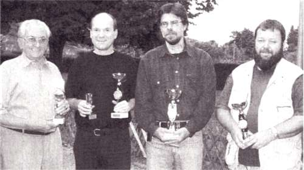

JHV 2002
Bürgermeister Merle zu Besuch

Pokale für die Vereinsmeisterschaft erhielten (von links):
Siegfried Korb (Sieger Gr. 2), Bernhard Bürgin (2. Platz),
Vereinsmeister Wolfgang Scheina, Roland Bahner (3. Platz)